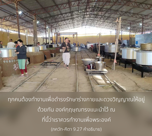
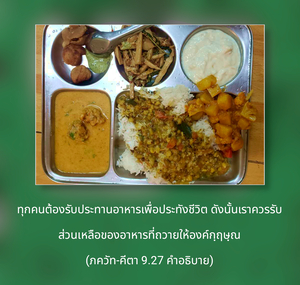
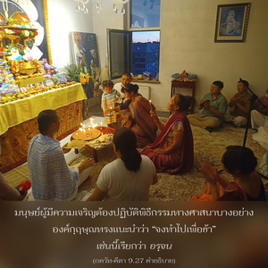

อะไรก็แล้วแต่ที่เธอทำ อะไรก็แล้วแต่ที่เธอรับประทาน อะไรก็แล้วแต่ที่เธอถวายหรือให้ทาน และความสมถะใดๆที่เธอปฏิบัติ จงทำไปเพื่อถวายแด่ข้า โอ้ โอรสพระนาง กุนฺตี



ดังนั้น จึงเป็นหน้าที่ของทุกคนที่จะหล่อหลอมชีวิตของตนเองจนกระทั่งไม่สามารถลืมองค์กฺฤษฺณได้ ไม่ว่าในสถานการณ์ใดๆ ทุกคนต้องทำงานเพื่อดำรงรักษาร่างกาย และดวงวิญญาณให้อยู่ด้วยกัน องค์กฺฤษฺณทรงแนะนำไว้ ณ ที่นี้ว่าเราควรทำงานเพื่อพระองค์ ทุกคนต้องรับประทานอาหารเพื่อประทังชีวิต ดังนั้น เราควรรับส่วนเหลือของอาหารที่ถวายให้องค์กฺฤษฺณ มนุษย์ผู้มีความเจริญต้องปฏิบัติพิธีกรรมทางศาสนาบางอย่างองค์กฺฤษฺณทรงแนะนำว่า “จงทำไปเพื่อข้า” เช่นนี้เรียกว่า อรฺจน ทุกคนมีแนวโน้มที่จะให้บางสิ่งบางอย่างเป็นทาน องค์กฺฤษฺณทรงตรัสว่า “จงให้แด่ข้า” เช่นนี้หมายความว่า ส่วนเกินของเงินที่สะสมไว้ควรใช้ประโยชน์ในการเผยแพร่ขบวนการกฺฤษฺณจิตสำนึก ปัจจุบันนี้ผู้คนมีแนวโน้มไปในวิธีการทำสมาธิเป็นอย่างมาก ซึ่งปฏิบัติกันไม่ได้ในยุคนี้ แต่หากผู้ใดปฏิบัติสมาธิที่องค์กฺฤษฺณวันละยี่สิบสี่ชั่วโมง ด้วยการสวดภาวนามหามนต์ หเร กฺฤษฺณ รอบลูกประคำ แน่นอนว่าเราจะเป็นนักปฏิบัติสมาธิ และเป็นโยคีที่ยิ่งใหญ่ที่สุด ดังที่ได้ยืนยันไว้ในบทที่หกของ ภควัท-คีตา